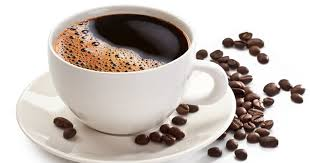
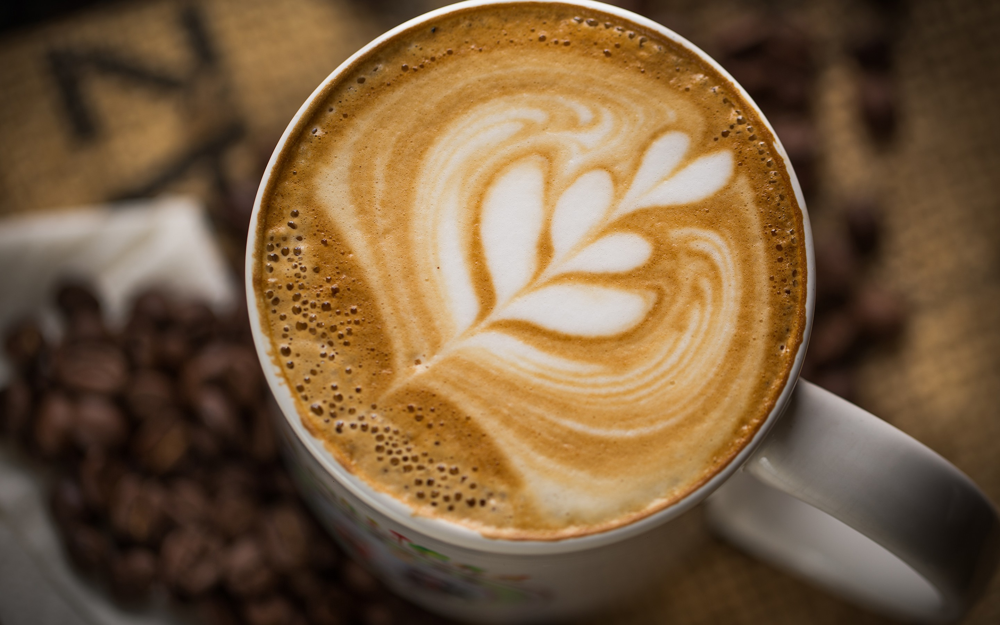
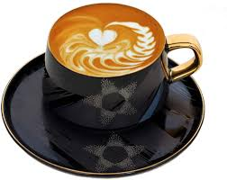
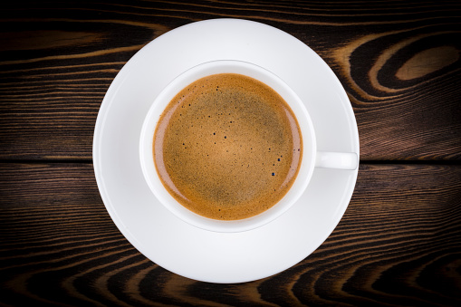
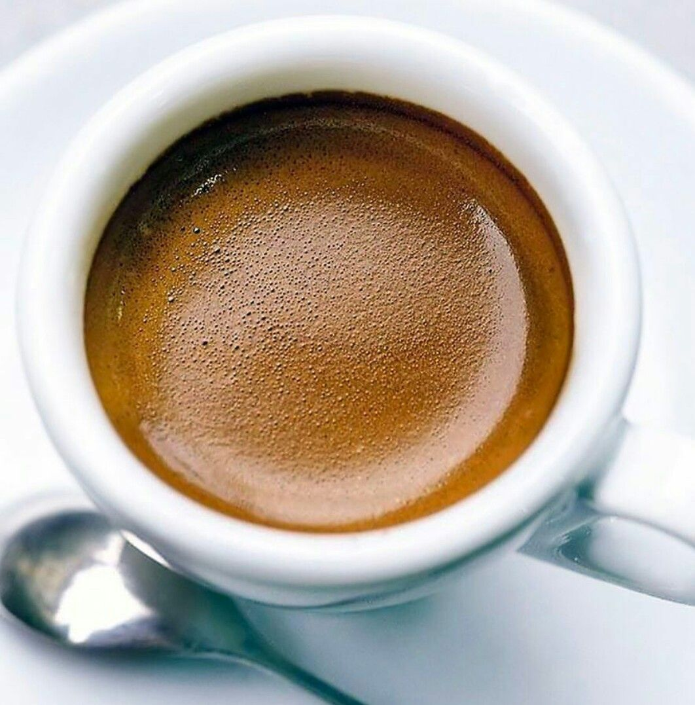
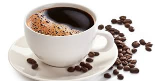
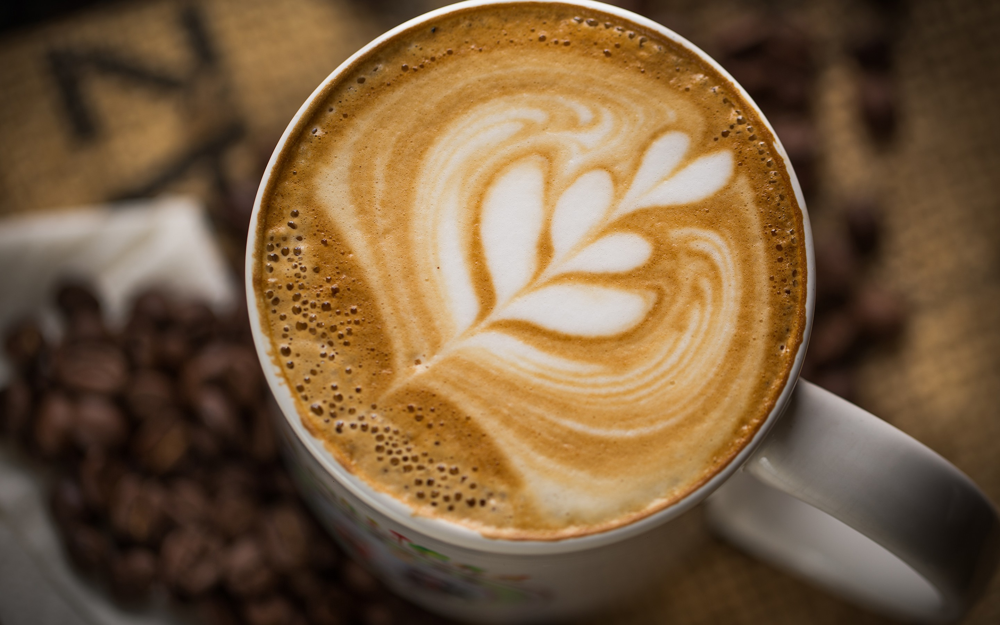
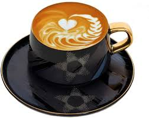
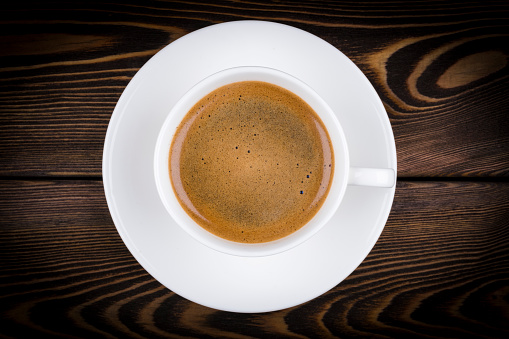
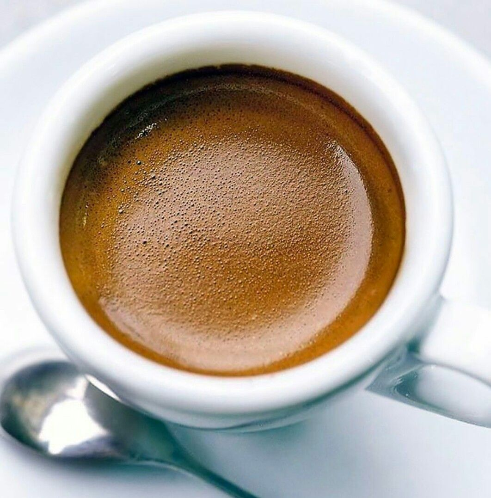

TYPES OF COFFEE
Espresso
There's no drink easier to make than an espresso. The coffee grounds are packed tightly into the filter and hot water is forced through the filter to create a very strong dark coffee, typically served in 1-2 ounce portions.
Cappuccino
Very popular around the world, the cappuccino is similar to a flat white, only the espresso is blended with extra milk before the milk foam is added. It is typically equally parts espresso, milk and milk foam.
Cafe au Lait
This drink translates as coffee with milk. It's a strong filtered or brewed coffee (not espresso), with warm milk added. This is the most popular way to order coffee in France and throughout Northern Europe.
Flat White
There's some debate over where exactly the flat white was invented was it Australia or New Zealand? While the row rages on, we're just happy that someone had the foresight to create such a wonderful drink.

Mocha
A mocha is essentially a cappuccino or coffee + milk drink with added chocolate, either in the form of cocoa or chocolate syrup. To me, they are the adult version of chocolate milk, only you dont sound like a child ordering a mocha at a coffee bar.
Cafe Cubano
A Cafe Cubano is pretty sweet, so if you dont like your coffee sweetened, you might not appreciate this form. If youre visiting Cuba, you absolutely must try it though. Its part of the culture and its a great sweet treat
Dalgona
Dalgona coffee originated in South Korea and became super popular on YouTube for how simple it is: just instant coffee, water and sugar is all it takes to make this creamy whipped topping
Turkish Coffee
This drink is made differently than most coffees. You prepare it by boiling water with really fine, medium roast coffee grounds in a wide-bottom copper pot, without a filter.


 








